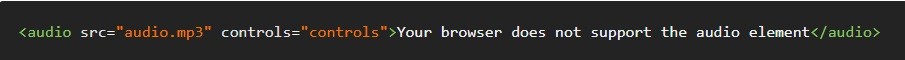
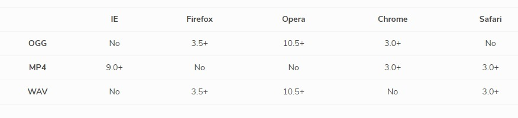
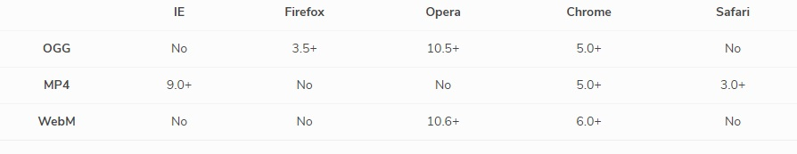

HTML 5 Tags for Media

What is HTML 5
HTML5 is a software solution stack that defines the properties and behaviors of web page content by implementing a markup based pattern to it.
HTML5 is the fifth and current major version of HTML, and subsumes XHTML. The current standard, the HTML Living Standard is developed by WHATWG, which is made up of the major browser vendors (Apple, Google, Mozilla, and Microsoft), with the Living Standard also existing in an abridged version.
What are HTML 5 tags for Media
HTML5 aims to standardize elements on a page and reduce the use of plugins to get the leverage more from the browser. With HTML4 you would always need a plugin, such as Flash or Quicktime, to be able to listen to music and video (think YouTube). HTML5 changes that. In HTML5, you can just put a video inside some ‘video’ tags (as easy as you would put an image inside an ‘img’ tag) and, voila! Instant video action.
We will go through a few examples of these tags including...
Audio
Video
Audio Events
The video tag allows you to embed a video like never before. HTML 5 gives you the ability to do this without the need of flash or other cumbersome programs.
Syntax
You need to be careful, some audio files only work with some browsers.
It is important to note that you should not have the audio file auto play. This is annoying.
Video Events
The audio tag allows you to put a music file directly into the HTML code without the use of a plugin, such as Flash or Javascript. There are three types of audio formats that are compatible with this tag: .ogg, .mp3 and .wav. However, some of these file types will only work with certain browsers.
Syntax
Likewise with video you need to be careful, some video files only work with some browsers.
In this case you could have the video play as the site loads, you just need to be mindful of the video size. You don't want a visitor to wait multiple minutes for the video to load.